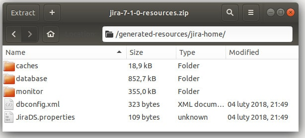

Introducing integration tests at the beginning of plugin development is good. It may be even impossible to click through all the versions we'd like to support.
As usual, there are multiple ways to achieve the same goal. I'm going to implement the standard method. It's easy to set-up, and it'll be enough for now. In the future, I'll revisit our integration tests and rewrite them to be more powerful.
Populating Jira with a prepared dataset
First, we'd like to populate Jira with some essential data. Otherwise, well have to go through the getting started wizard every time we start a test.
Start Jira with atlas-debug or atlas-run command. It's essential to start the oldest Jira version we'd like to support. You can use the old dataset in a new version of Jira. It doesn't work the other way because Jira doesn't support downgrade tasks.
When you fill your Jira with necessary data, you can backup the current state. Run atlas-create-home-zip command. As a result, you'll get a zip file target/jira/generated-test-resources.zip. The file contains Jira home directory (configurations, h2 database, and indexes).

It is also possible to restore Jira state from the Jira backup. It's especially useful when we'd like to test on different databases (than the file based).
Copy generated zip to src/test/resources. You can give a more meaningful name to the file. Go back to the pom.xml file. In maven-jira-plugin section configure productDataPath to point to our backup. Then change productDataVersion to reflect our Jira version. See the diff for reference.
Now, every time you start Jira from atlas-run/atlas-debug it'll be populated with the backup data. You can use the backup with any newer version of Jira. The application will handle upgrades.
Writing Plugin integration test
One of the dependencies we just added contains page pbjects. We can use them or write our own. We're going to create two page objects. One for the top menu and one that extended Issue Create Dialog (with the extra checkbox added).
Before we write the test, we need to specify tested Jira instance.
The test will verify if the checkbox is attached. Check the diff.
You can use atlas-integration-test to run the integration test. You can also specify the Jira version.
Pros & cons
As I mentioned at the beginning, this is one of the possible ways to introduce integration tests to Jira plugin. This approach has pros and cons.
Pros:
- Easy to set up
- The standard way
- We can reuse Jira page objects
Cons:
- We build plugin every time with the tested version
- Jira is set up from war, not from the real Jira installer
- This way doesn't support data center testing
- We need to specify each tested version in our CI
- Uses old Selenium version and old browsers
- We can't run headless chrome - we need to install Xvfb on CI agent
- We need to prepare and update Jira versions manually after every release
Running the integration tests for each version on the local machine would be overwhelming. Next time we're going to set-up the CI for our plugin.